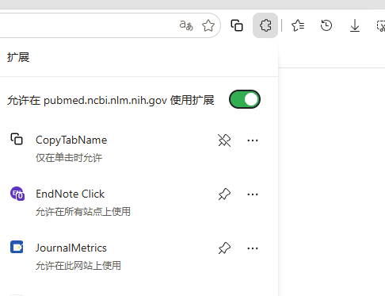
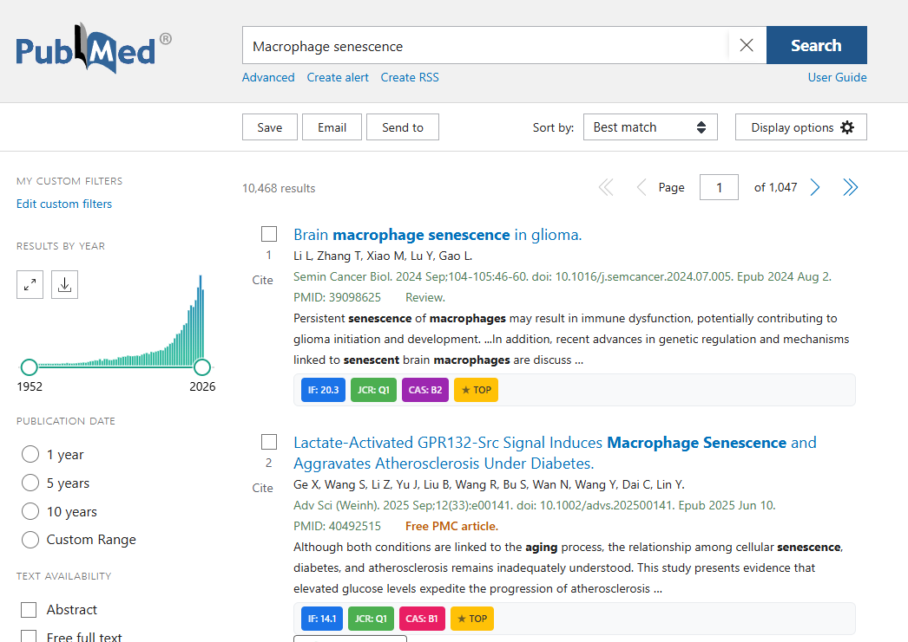
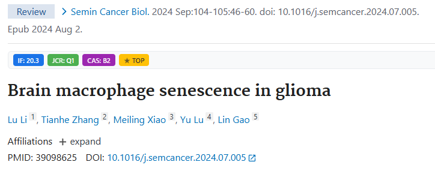
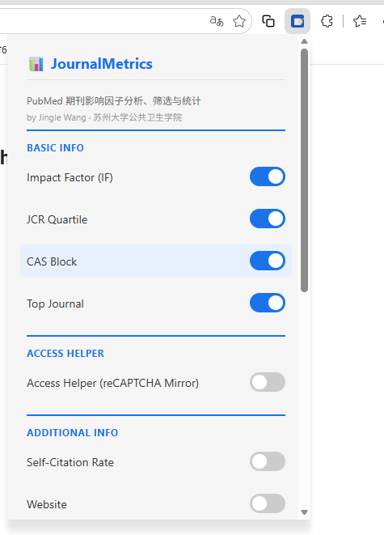
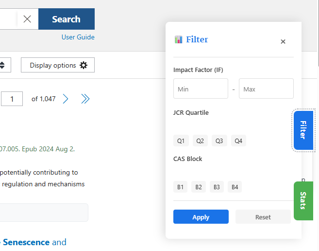
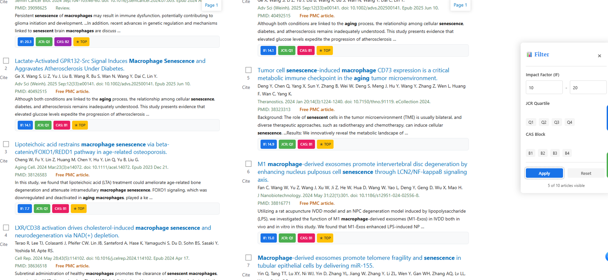
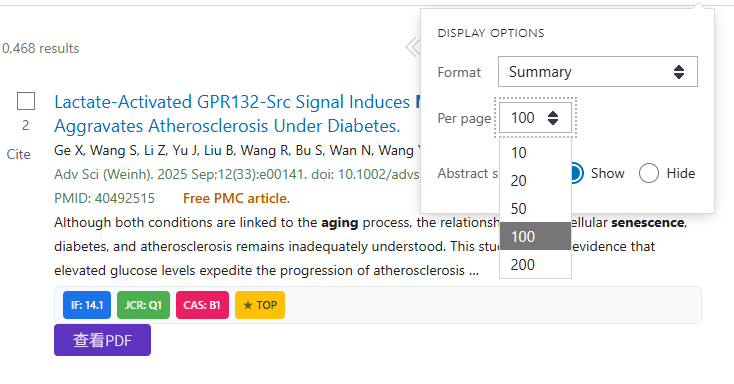
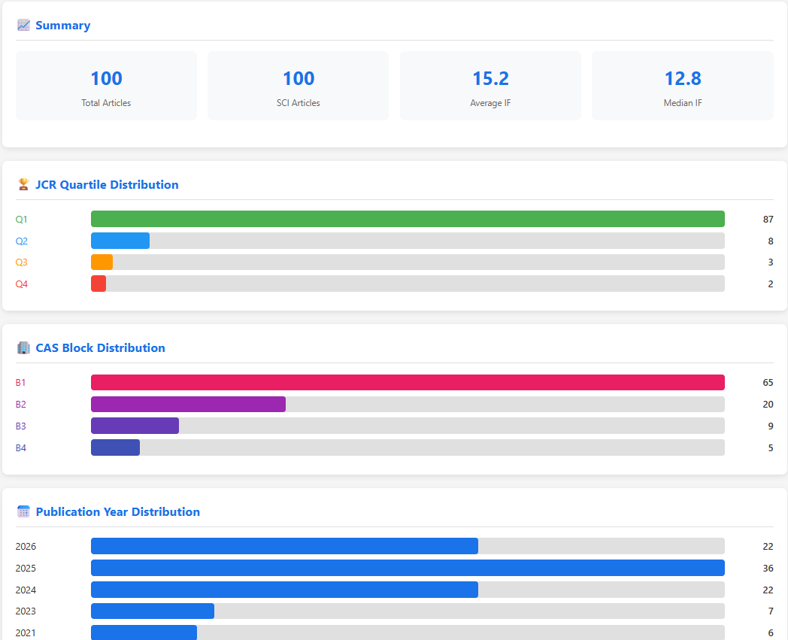
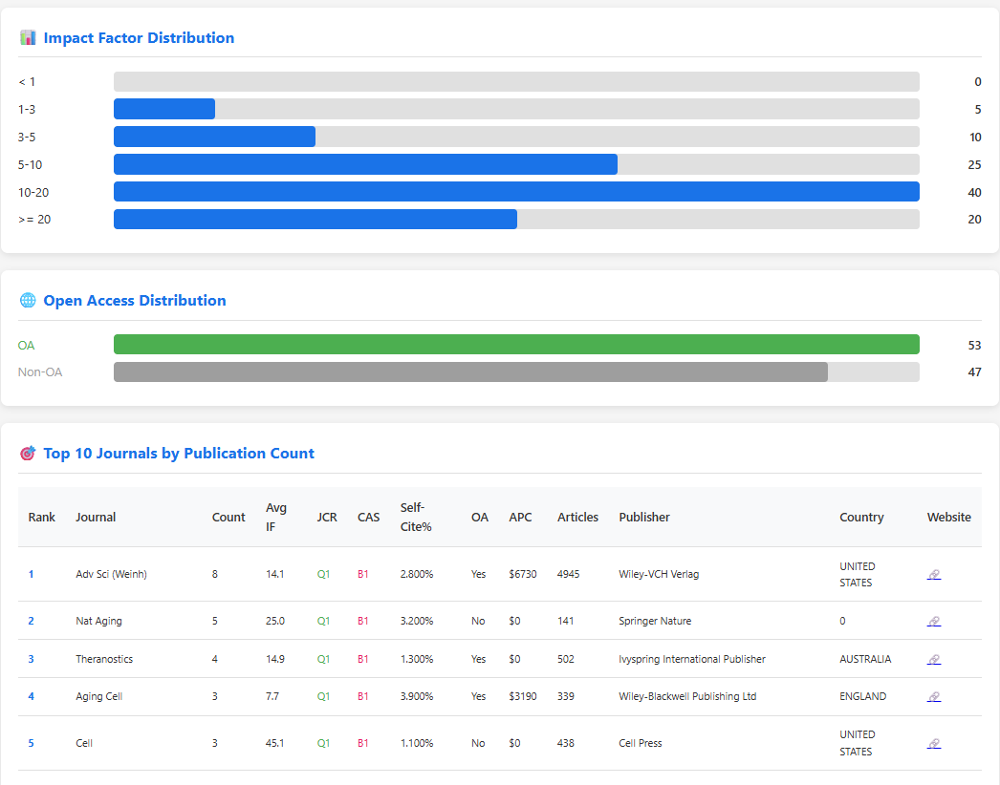

📊 JournalMetrics
1. 产品简介
JournalMetrics 是一款专为 PubMed 设计的 Chrome 浏览器扩展，旨在为科研人员提供便捷的期刊信息查询、文献筛选和结果统计分析工具。
支持的浏览器
- Google Chrome 88+ (Manifest V3)
- Microsoft Edge 88+
- 其他基于 Chromium 的浏览器
2. 安装指南
2.1 加载已解压的扩展程序
打开 Chrome 浏览器，在地址栏输入 chrome://extensions 并回车。
打开右上角的 开发者模式 开关。
点击左侧的 "加载已解压的扩展程序" 按钮。
选择插件所在的文件夹（包含 manifest.json 的目录），例如：
安装成功后，点击浏览器工具栏的拼图图标 🧩，将 JournalMetrics 固定到工具栏。

2.2 首次使用
- 打开 PubMed 网站
- 执行一次文献检索
- 页面将自动加载期刊信息，在每条文献下方显示信息框
- 点击插件图标打开设置面板，根据需要调整显示项
插件默认开启 Access Helper 功能，通过将 Google reCAPTCHA 请求重定向到国内可访问的 recaptcha.net 镜像站点，确保验证流程正常完成。如果遇到问题，请检查设置中的 Access Helper 开关。
3. 功能总览
JournalMetrics 提供以下核心功能模块：
| 功能模块 | 说明 | 默认状态 |
|---|---|---|
| 期刊信息展示 | 在搜索结果和详情页显示期刊指标 | ✅ 开启 |
| 文献筛选面板 | 按 IF/JCR/CAS 分区筛选文献 | ✅ 开启 |
| 统计分析 | 对检索结果进行统计分析 | — |
| 访问辅助 (Access Helper) | 重定向 reCAPTCHA 到 recaptcha.net 镜像 | ✅ 开启 |
| 扩展信息展示 | 自引率、OA、APC 等扩展字段 | ❌ 关闭 |
4. 期刊信息展示
4.1 搜索结果页展示
在 PubMed 搜索结果页面，每条文献下方会自动出现一个期刊信息框（Journal Info Box），显示该文献所在期刊的各项指标。

4.2 详情页展示
在文献详情页（点击文献标题进入的页面），期刊信息会显示在文章引用（Article Citation）下方的独立信息框中。

4.3 可显示的信息字段
| 字段 | 说明 | 示例 | 默认 |
|---|---|---|---|
| Impact Factor (IF) | 期刊影响因子 | 84.5 | ✅ |
| JCR Quartile | JCR 分区（按学科领域排名） | Q1 | ✅ |
| CAS Block | 中科院分区（按SCI期刊分区） | B1 | ✅ |
| Top Journal | 顶级期刊标记 | TOP | ✅ |
| SCI | 是否为 SCI 收录期刊 | SCI: Yes / SCI: No | 自动 |
| Self-Citation Rate | 自引率 | 2.800% | ❌ |
| Website | 期刊官方网站链接 | Link | ❌ |
| Open Access | 开放获取状态 | Yes / No / Hybrid | ❌ |
| Publisher | 出版商名称 | Elsevier | ❌ |
| Country | 出版商所在国家 | Netherlands | ❌ |
| Articles/Year | 年发文量 | 1,234 | ❌ |
| Research Proportion | 研究论文占比 | 92.3% | ❌ |
| APC | 版面费（不同货币） | USD 5,000 | ❌ |
4.4 分区颜色说明
JCR 分区
| Q1 | 绿色 - 该学科领域前 25% |
| Q2 | 蓝色 - 25%~50% |
| Q3 | 橙色 - 50%~75% |
| Q4 | 红色 - 后 25% |
中科院分区 (CAS)
| B1 | 红色 - 医学、生物类 Top 期刊 |
| B2 | 紫色 - 医学、生物类代表期刊 |
| B3 | 深紫 - 医学、生物类一般期刊 |
| B4 | 靛蓝 - 医学、生物类冷门期刊 |
分区颜色仅用于视觉区分，实际分区含义以 JCR 和中科院分区标准为准。
5. 设置面板
5.1 打开设置
点击浏览器工具栏的 JournalMetrics 图标 📊，将弹出设置面板。

5.2 设置项说明
设置面板分为三个区块：
🔹 Basic Info（基础信息）
| 设置项 | 说明 |
|---|---|
| Impact Factor (IF) | 显示期刊影响因子 |
| JCR Quartile | 显示 JCR 分区 |
| CAS Block | 显示中科院分区 |
| Top Journal | 显示顶级期刊标记 |
🔹 Access Helper（访问辅助）
| 设置项 | 说明 |
|---|---|
| Access Helper | 开启/关闭 reCAPTCHA 镜像重定向功能 |
🔹 Additional Info（扩展信息）
| 设置项 | 说明 |
|---|---|
| Self-Citation Rate | 自引率 |
| Website | 期刊网站链接 |
| Open Access | 开放获取状态 |
| Publisher | 出版商 |
| Country | 出版国家 |
| Annual Article Count | 年发文量 |
| Research Articles Proportion | 研究论文占比 |
| APC | 版面费 |
设置会自动保存到浏览器本地存储，刷新页面后立即生效。建议根据实际需求开启扩展信息，避免信息框过长影响阅读。
6. 文献筛选功能
6.1 筛选面板
在 PubMed 搜索结果页，页面右侧会出现一个可折叠的悬浮筛选面板。
- 点击 "Filter" 按钮展开筛选面板
- 点击面板外部或再次点击按钮可折叠面板
- 设置筛选条件后点击 "Apply" 应用筛选
- 点击 "Reset" 重置所有筛选条件

6.2 筛选条件
| 筛选类型 | 选项 | 说明 |
|---|---|---|
| Impact Factor | 最低 IF 值 | 仅显示影响因子 ≥ 设定值的文献 |
| JCR Partition | Q1 / Q2 / Q3 / Q4 | 按 JCR 分区筛选，可多选 |
| CAS Partition | B1 / B2 / B3 / B4 | 按中科院分区筛选，可多选 |
6.3 筛选效果
- 筛选后，不符合条件的文献将被隐藏
- 信息框中会显示筛选状态指示
- 支持多个条件组合筛选（AND 逻辑）

7. 统计分析功能
7.1 启动统计分析
- 在 PubMed 搜索结果页，点击页面底部的 📈 Stats 按钮
- 弹窗显示 "Analyze current page?"，点击 "OK"
- 自动跳转至统计分析页面

7.2 统计内容
📈 摘要统计
| 指标 | 说明 |
|---|---|
| Total Articles | 当前页面文献总数 |
| SCI Articles | SCI 收录期刊文献数 |
| Average IF | 所有文献所在期刊的平均影响因子 |
| Median IF | 影响因子中位数 |

🏆 JCR 分区分布
以条形图展示各 JCR 分区的文献数量分布。
🏢 CAS 分区分布
以条形图展示各中科院分区的文献数量分布。
📅 发表年份分布
展示文献发表年份的分布情况，按年份统计文献数量。
📊 影响因子分布
按影响因子区间统计文献数量（如 IF 0-10, 10-20, 20-50, 50+）。

🌐 开放获取分布
展示 Open Access 状态的分布（Yes/No/Hybrid/Transformative）。
🎯 Top 10 发文最多期刊
列出当前页面发表文章最多的前 10 个期刊，并提供完整的期刊信息：
| 列 | 说明 |
|---|---|
| Rank | 排名 |
| Journal | 期刊名称 |
| Count | 发文数量 |
| Avg IF | 平均影响因子 |
| JCR | JCR 分区 |
| CAS | 中科院分区 |
| Self-Cite% | 自引率 |
| OA | 开放获取状态 |
| APC | 版面费 |
| Articles | 年发文量 |
| Publisher | 出版商 |
| Country | 出版国家 |
| Website | 期刊网站 |
统计分析基于当前页面加载的所有文献。如需分析更多文献，可在 PubMed 搜索结果页增加每页显示数量（Settings → Display → Items per page）。
8. 访问辅助功能 (Access Helper)
8.1 问题背景
PubMed 为防止自动化滥用，会对可疑访问触发 Google reCAPTCHA BOQ（Browser Only Challenge）验证机制。当系统判断请求异常时，会将用户重定向到 Google 的 reCAPTCHA 挑战页面（google.com/recaptcha/challengepage）。
对于中国大陆用户而言，由于 google.com 在国内网络环境下不可达，一旦被重定向到该验证页面，验证组件的脚本、iframe 等资源无法加载，用户将永久卡在 "Checking your browser" 页面，无法继续访问 PubMed。
Access Helper 的核心思路是将 Google reCAPTCHA 请求重定向到国内可访问的镜像站点，使验证流程正常完成，而非阻断或绕过验证。Google 官方提供了 recaptcha.net 作为 reCAPTCHA 的备用域名，该域名在国内可以正常访问。
8.2 工作原理
Access Helper 通过 DeclarativeNetRequest (DNR) API 和内容脚本实现请求重定向，包含以下机制：
通过 rules.json 配置以下重定向规则：
| 规则 | 原始地址 | 重定向到 | 说明 |
|---|---|---|---|
| 规则 #1 | google.com/recaptcha/* |
recaptcha.net/recaptcha/* |
将 reCAPTCHA 验证页面和资源重定向到 Google 官方备用域名（国内可访问） |
| 规则 #2 | ajax.googleapis.com/* |
gapis.geekzu.org/ajax/* |
将 Google AJAX 库重定向到国内镜像站 |
| 规则 #3 | 移除 PubMed 页面的 Content-Security-Policy 响应头，允许镜像站点的脚本正常加载执行 |
||
效果：当 PubMed 触发 reCAPTCHA 时，DNR 在网络层将 google.com/recaptcha 的请求自动重定向到 recaptcha.net/recaptcha。验证页面从 recaptcha.net 加载，国内用户可正常完成验证后返回 PubMed。
当 DNR 规则未能拦截时（如通过 JavaScript 动态触发跳转），内容脚本作为兜底：
- URL 检测：页面加载时立即检查 URL，若仍在
google.com/recaptcha则通过window.location.replace跳转到recaptcha.net - SPA 监听：通过 patch
history.pushState监听客户端路由变化，捕获动态重定向 - popstate 监听：监听浏览器后退/前进事件中的 reCAPTCHA 跳转
8.3 浏览器指纹伪装
为降低触发 reCAPTCHA 的概率，Access Helper 还会通过注入 MAIN 世界脚本（main-world.js）修改页面可见的浏览器属性：
| 属性 | 修改后 |
|---|---|
navigator.webdriver | undefined |
navigator.languages | ['en-US', 'en'] |
navigator.platform | 'Win32' |
navigator.hardwareConcurrency | 8 |
navigator.deviceMemory | 8 |
navigator.plugins | 模拟 3 个插件 |
navigator.userAgentData.brands | 标准 Chrome 品牌标识 |
window.chrome | 模拟存在 |
内容脚本默认运行在隔离世界（Isolated World）中，页面原生 JavaScript 无法看到其修改。Access Helper 通过 <script src="chrome-extension://..."> 标签加载外部脚本文件 main-world.js，将代码注入 MAIN 世界，使修改对页面内所有脚本可见。此方式符合页面的 CSP 策略。
8.4 使用方法
- 默认情况下 Access Helper 已开启（首次安装时自动启用 DNR 规则）
- 如需关闭，点击工具栏图标，在 Access Helper 区块关闭开关
- 关闭时 DNR 重定向规则被禁用
- 重新开启时，DNR 规则重新启用，页面也会自动刷新以确保设置生效
Access Helper 仅用于改善正常用户的浏览体验，请勿用于任何违反 PubMed 使用条款的用途。该功能旨在帮助中国大陆用户正常访问 PubMed 资源，而非规避合法的反滥用措施。
9. 数据源说明
9.1 数据来源
| 数据文件 | 来源 | 内容 |
|---|---|---|
filter_data.json |
JCR 官方数据 + CAS 分区数据 | SCI 期刊列表，包含 IF、JCR、CAS 等核心数据 |
pubmed_abb_data.json |
PubMed 官方数据 | 非 SCI 期刊列表，提供基础期刊信息 |
jcr_cas_ifqb.json |
JCR 扩展数据 | 自引率、OA、APC、出版商等扩展信息 |
9.2 数据匹配
- 以期刊缩写（abbreviation）为唯一匹配键
- 支持带括号和不带括号的期刊名匹配
- 先在 SCI 期刊库中匹配，若未命中则在非 SCI 期刊库中匹配
- 采用精确匹配策略，确保数据准确性
9.3 数据更新
如需更新数据，请替换以下文件：
data/filter_data.json- 核心期刊数据data/jcr_cas_ifqb.json- 扩展数据data/pubmed_abb_data.json- 非 SCI 期刊数据
更新后刷新页面即可生效，无需重新安装插件。
10. 常见问题
解答：
- 确认已打开 PubMed 网站（
pubmed.ncbi.nlm.nih.gov） - 刷新页面（Ctrl+F5）
- 检查插件是否已正确安装并启用
- 打开开发者工具（F12）查看 Console 是否有错误信息
- 确认 Access Helper 已开启
解答：
可能原因：
- 该期刊不在数据库中（非 SCI 期刊、新收录期刊等）
- 期刊缩写格式不匹配
- 数据文件需要更新
插件会为所有期刊尝试匹配，匹配失败时显示 "SCI: No" 标记。
解答：
- 打开设置面板，确认对应选项已开启
- 部分期刊可能没有扩展数据（数据本身缺失）
- 确认使用的是最新版本的数据文件
解答：
这是因为 PubMed 触发了 Google reCAPTCHA 验证。Access Helper 会自动将验证请求重定向到国内可访问的 recaptcha.net 镜像。如果仍然出现问题：
- 确认插件已安装且 Access Helper 功能已开启（默认开启）
- 打开
chrome://extensions，找到 JournalMetrics 并点击重新加载按钮
（重要：修改 rules.json 后必须重新加载扩展，Chrome 才会索引新的 DNR 规则） - 刷新 PubMed 页面（Ctrl+F5）
- 验证页面应从 recaptcha.net 加载，完成验证后自动返回 PubMed
- 如持续失败，请稍后重试或更换网络环境
解答：
Stats 按钮（绿色）位于 PubMed 搜索结果页面底部。如果没有看到：
- 向下滚动到页面底部
- 检查是否被其他元素遮挡
- 刷新页面重试
解答：
将鼠标移到页面右侧边缘，会出现 "Filter" 按钮，点击即可展开筛选面板。
解答：
- 打开
chrome://extensions - 找到 JournalMetrics
- 点击"移除"按钮
11. 作者信息
| 基本信息 | |
|---|---|
| 姓名 | Jingle Wang（王进） |
| 单位 | 苏州大学公共卫生学院 |
| 邮箱 | jinwang93@suda.edu.cn |
| 个人网站 | https://www.jingege.wang |
如有任何建议、问题或功能需求，欢迎通过以下方式联系：
感谢您的使用与反馈！